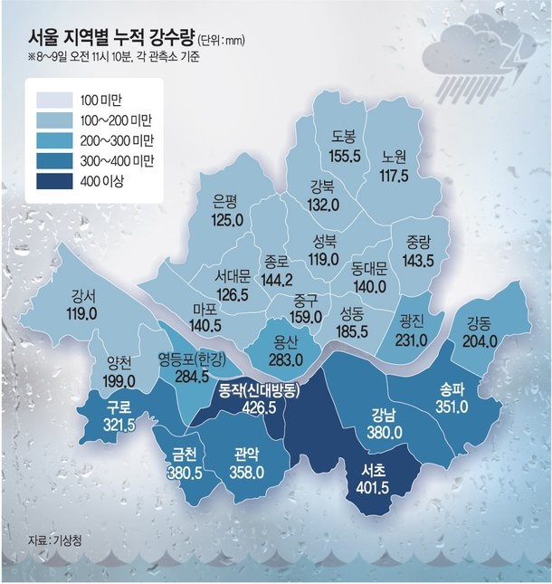
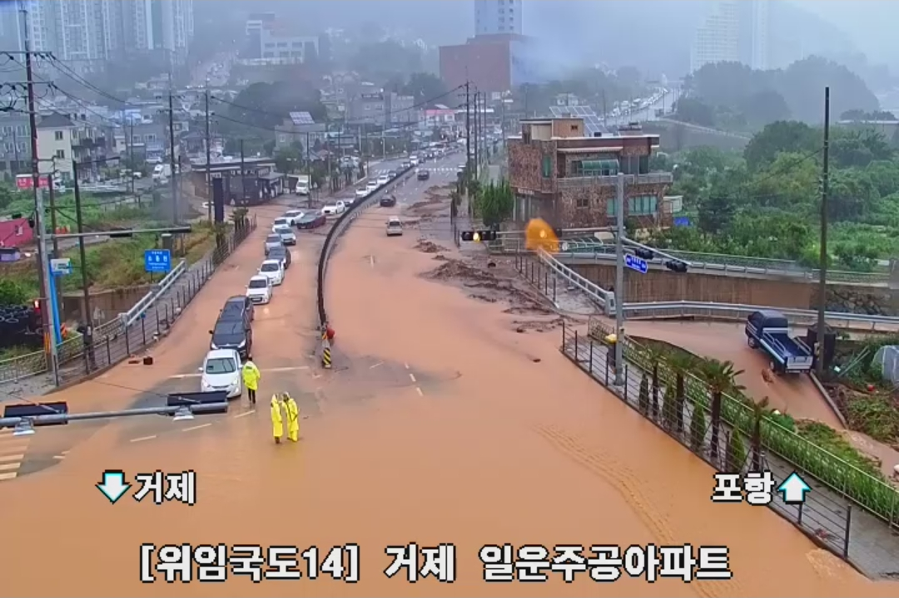
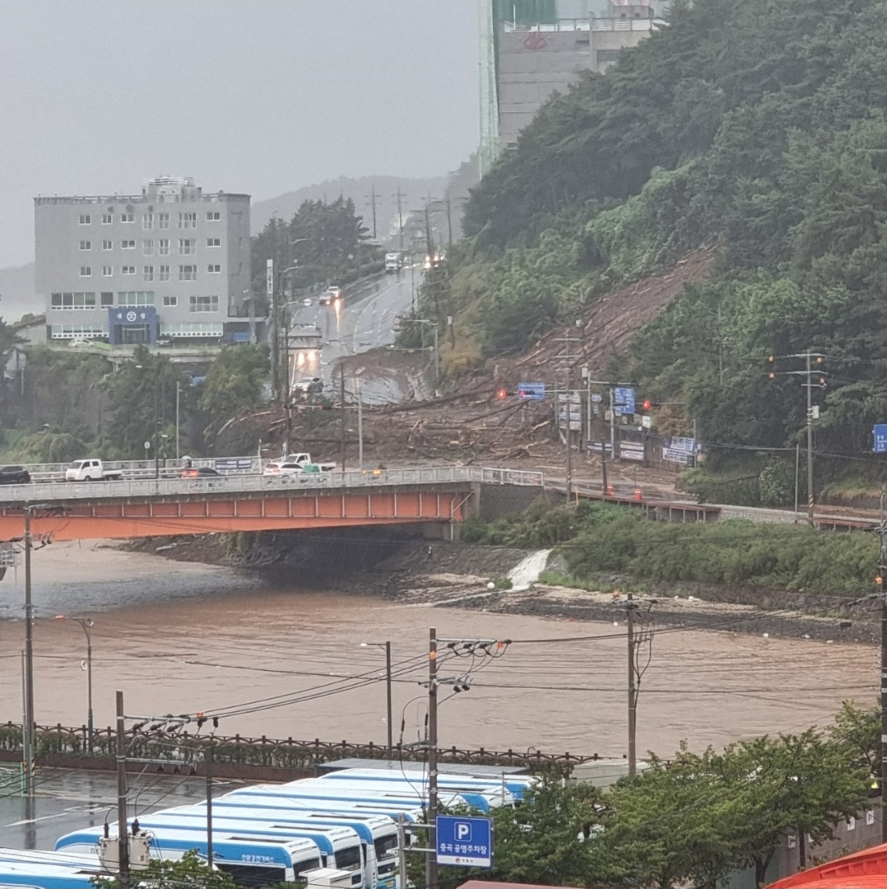
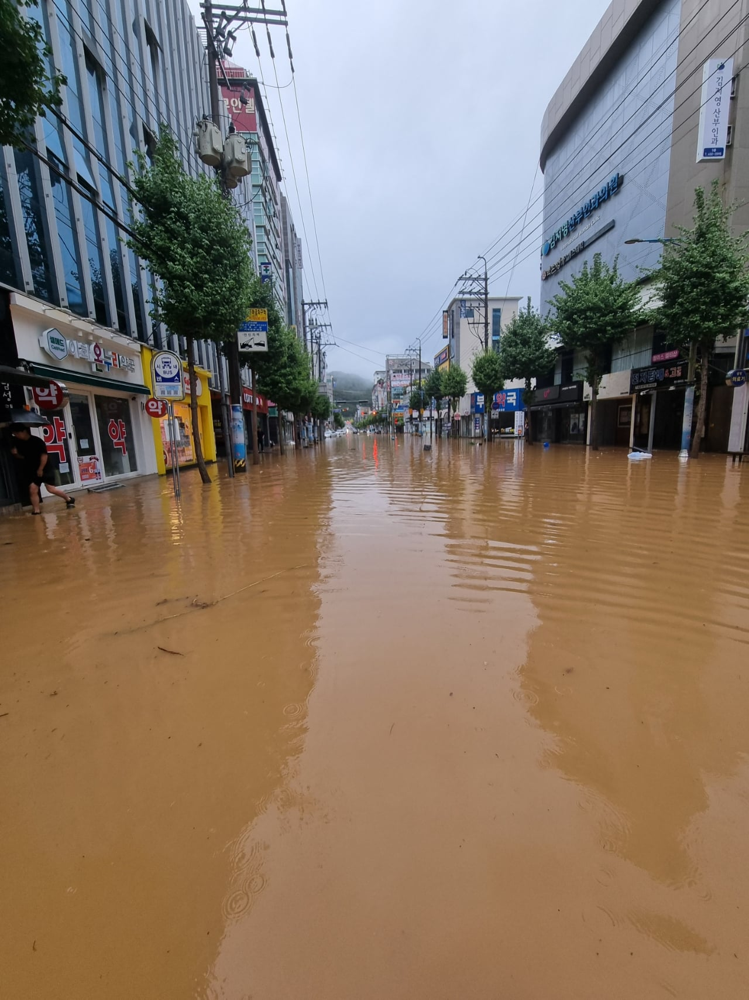
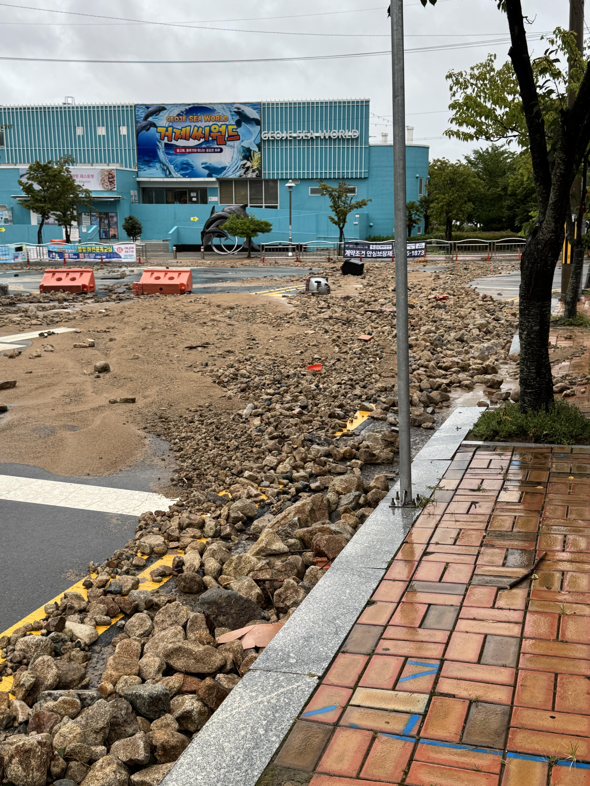
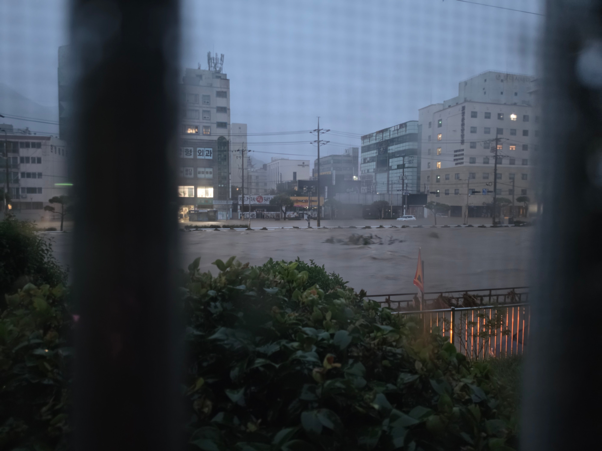
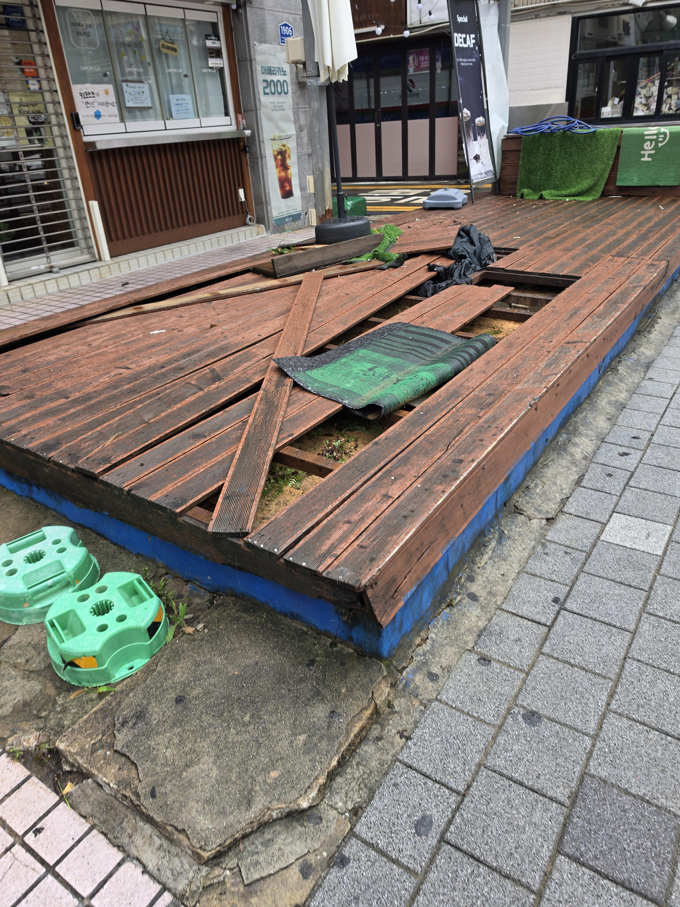
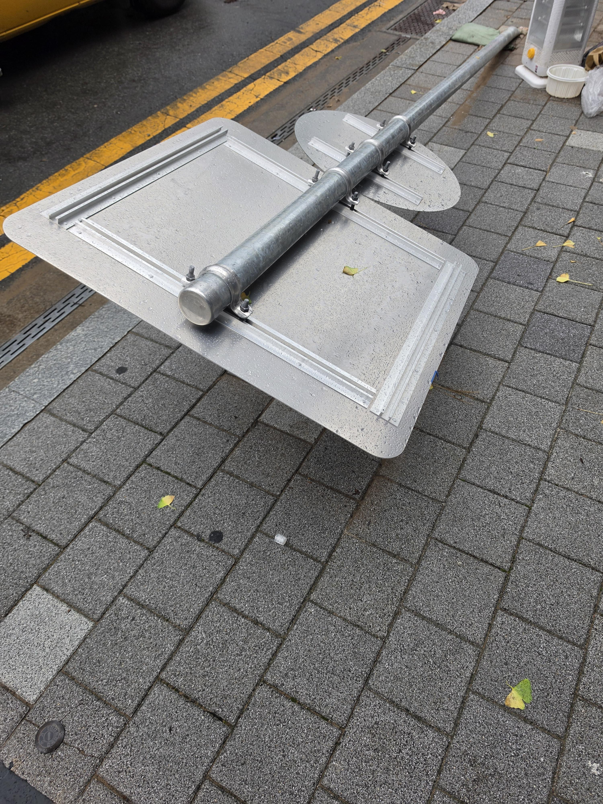

그 난리가 났었던 2022년 서울 침수사태때
누적 강수량이 300~400mm.
이번에 거제에 내린게 957mm.....







같은 거제 사람으로서 사고로 돌아가신분께는 정말 죄송한 말이지만
그나마 비와 바람에 익숙하다못해 도가튼게 거제도라서 이정도로 끝났음.
진짜 다른곳 쏟아졌으면 끔찍함....
솔직히 사망자 수십... 수백단위는 나왔을거 같음.
그래도 확실히 비나 바람엔 도가튼 사람들이라
현재 길은 대부분 뚫렸고 빠르게 복구중.
살수차가 시내 곳곳 돌아댕기면서 씻어내는중임.
시발..... 주말 내내 공구리쳐야할판임 ㅂㄷㅂㄷ
우리집은 다행히 무사한데 집빼고 다 박살났어....
거제 無야-호! 시부랄.....
댓글
수집 당시 댓글 43개
냐냐냥냥냐냥 · 3 일 전
매미때는 거제전체가 1주일 정전이었음 지금은 그냥 침수정도..
낮에나온반달 · 3 일 전
서울에 1미터 터졌으면 최소 수천 사상났음 개무섭다..
알파드 · 3 일 전
저 정도면 바닷물도 싱거워지겠다 ㅅㅂ 무슨 비가 1미터가 오냐
사탕수수개달다 · 3 일 전
실제 싱거워짐
엑셀노예 · 3 일 전
비가 1미터 왔다고하니까 느낌이 다르네 ㅅㅂ
쌀라면 · 3 일 전
18년도에 펌프 시설 구축한게 신의 한수였다고 생각한다 나는
니콜라스카 · 3 일 전
지구가 ㅈ되긴 했구나
마리괭이 · 3 일 전
저 정도면 진짜 선방한거지....
나랑드콜라 · 3 일 전
진짜 존나 선방했다. 다른지역이었으면 사상자 더 나왔을듯
도쿄피에스타 · 3 일 전
다른지역? 다른나라였으면 역대급 참사로 역사책에 나올정도야 ㅜㅜ 독일 200년만의 홍수가 고작 200미리였음
잔디머리 · 3 일 전
그니까 다른지역 , 다른나라 말고 뭔 소리하고있어
도쿄피에스타 · 3 일 전
다른지역도 가끔은 저렇게 비가 오니까 당연히 홍수가 나고 뉴스에 나오는데 다른나라였으면 역사적 이라고
견주최씨 · 3 일 전
와 씨
냐냐냥냥냐냥 · 3 일 전
거제도도 가뭄이라 댐 2개가 거의 말라가고있었는데 하루만에 댐이 넘쳣다더라
r4e3w2q1 · 3 일 전
ㅎㄷㄷ
호랭총각 · 3 일 전
하루만에? 얼마나 온건지 상상이 안가네
ggil2890 · 3 일 전
와 씨 ㄷㄷㄷ
마키마의반죽교실 · 3 일 전
거제 이번에 온 비가 3일 누적 957mm 하루 제일 많이 내린게 577.4mm로 역대 일일강수량 3위기록 그럼 1위는 어디냐 강릉 870.5mm 02년 8월 31일 태풍 루사가 뿌리고 감 2위도 마찬가지 태풍 루사가 대관령에 같은 날 712.5mm 뿌림 거제는 태풍 돌핀의 시체인 열대 저기압 영향이라고 하고 기존 3위도 태풍 애그니스가 81년도에 뿌리고 간 전남 장흥임 547.4mm 태풍이 바람도 무섭지만 저 비가 진짜 무서워
고운말번역기 · 3 일 전
진짜 돌핀이 상륙이라도 했으면 ㄷㄷㄷ
오징어따콩 · 3 일 전
이중열돔 못뚫는다고 돌핀놀리고 했지만 돌핀상륙한 중국은 초토화됐드만
Alchemy · 3 일 전
ㄹㅇ 상상하기도싫음. 근데도 태풍와라 하는새끼들보고 답닺해뒤질뻔. 걍 좀 더워도 참는게 낫지 요즘같을때에 태풍은 ㅅㅂ
서울대학교6학년1반 · 3 일 전
태풍도 장점이 있다 농사하는 입장에서 지금처럼 가물면 수온도 낮추고 좋아 근데 돌핀이 ㅈ밥이 아니었다는건 모른거지
연골어류 · 3 일 전
950....?
호갱킹 · 3 일 전
ㅋㅋ 진짜 어이가없네 구름은 950미리치를 어케품고있었노
하티 · 3 일 전
바다가 따뜻하니 수증기가 증발해서 그대로 유입됐단다…… 어떻게 비가 산지직송……
김펭귄 · 3 일 전
이정도면 아쌈지방보다 단위면적당으론 더 내렸겠는걸?
2828193 · 3 일 전
이정도면 그냥 파도가 하늘에서 내린 수준 아닌가?
녹물을마시는새 · 3 일 전
오늘 새벽에 다녀봤는데 곳곳에 싱크홀 생기고 난리날거같다... 길 곳곳이 깨져있고 땅 사라져있고 아스콘 조각나서 떠내려가있음...
DON땃쥐미 · 3 일 전
진짜 거제라서 버틴거임 비랑 바람에 이골이 난지역이라
소크라페니스 · 3 일 전
맞네 그나마 거제도니까..
아자차카파타하 · 3 일 전
일산에서 500인가 600 경험해봤는데 그때 진짜 전설이였는데 그거에 .8배 더라니 ㄷㄷ
달빛찬가 · 3 일 전
대신 그 뒤로 일산 파주는 비와도 잘 대처하잖슴ㅋㅋ 빗물 펌프장도 많고 주기적으로 하천정비하고
中出し · 3 일 전
진짜 무서운건 누적보다 시간당임.
텅빈우유팩 · 3 일 전
진짜 거제라서 선방한거네; 서울에 900이였으면 좆됐다 ㄹㅇ
년차ADHD · 3 일 전
일단 구축 반지하 다 죽었음. 대참사 났다 ㄹㅇ.
구라치면화냄 · 3 일 전
침수차 야호~
습습후후 · 3 일 전
거제는 매미때도 그렇고 대형피해를 자주 입네 매미때는 창원 마산 피해 대민지원 나갔고 다녀와서 거제도로 해안경계 나갔는데 집이고 뭐고 다 날라감 ㄷㄷ
으악숑 · 3 일 전
와 태풍의 시체만으로도 이 정도 피해라고? 문제는 지구온난화에 따라 매년 더 심각해진다는거임......... 그리고 난 아파트는 어지간한 재해에서 무적이라고 생각했는데 그게 깨진게 개인적으로 좀 충격임. 방에서 그냥 자다가 돌아가시다니........ ㅠㅠ
그릇째뚝딱 · 3 일 전
나 제네시스 잠긴날 울동네도 무릎까지 참
야랄 · 3 일 전
자는데 흙냄새나서 일어나니까 원룸옆에 내리막길로 흙내려가더라 보면서 이야 비가 많이왓구나 하고 다시 잠.
다메요 · 3 일 전
아니 어떻게 거제에만 이렇게 올수가 있음....? 뭐지
쓸데없는거설명하는거좋아함 · 3 일 전
통영도 700넘게 옴
인천빠순이 · 3 일 전
코리아베네치아가 여깃네~